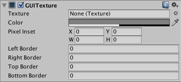
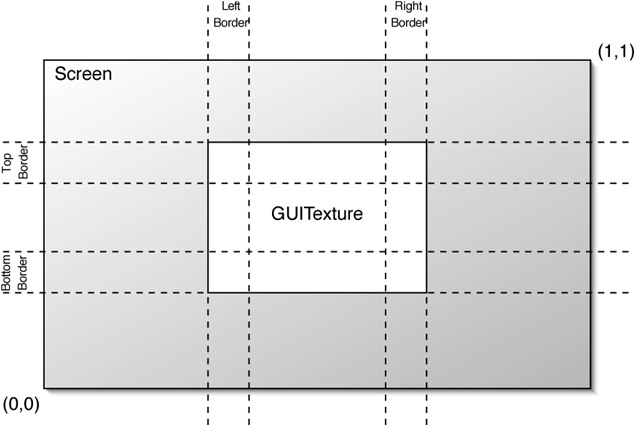

GUI Texture (Legacy UI Component)
Please Note: This component relates to legacy methods for drawing UI textures and images to the screen. You should use Unity's up-to-date UI system instead. This is also unrelated to the IMGUI system.
GUI Textures are displayed as flat images in 2D. They are made especially for user interface elements, buttons, or decorations. Their positioning and scaling is performed along the x and y axes only, and they are measured in Screen Coordinates, rather than World Coordinates.

Properties
| Property: | Function: |
|---|---|
| Texture | Reference to the Texture that will be used as the texture's display. |
| Color | Color that will tint the Texture drawn on screen. |
| Pixel Inset | Used for pixel-level control of the scaling and positioning of the GUI Texture. All values are measured relative to the position of the GUI Texture's Transform. |
| X | Left-most pixel position of the texture. |
| Y | Bottom-most pixel position of the texture. |
| Width | Right-most pixel position of the texture. |
| Height | Top-most pixel position of the texture. |
| Left Border | Number of pixels from the left that are not affected by scale. |
| Right Border | Number of pixels from the right that are not affected by scale. |
| Top Border | Number of pixels from the top that are not affected by scale. |
| Bottom Border | Number of pixels from the bottom that are not affected by scale. |

Details
To create a GUITexture:
- Select a Texture in the Project View
- Choose GameObject > Create General > GUI Texture from the menu bar
GUI Textures are perfect for presenting game interface backgrounds, buttons, or other elements to the player. Through scripting, you can easily provide visual feedback for different "states" of the texture -- when the mouse is hovering over the texture, or is actively clicking it for example. Here is the basic breakdown of how the GUI Texture is calculated:


Borders
The borders are the regions at each edge of the image (specified by pixel widths) that will not scale when the rest of the texture is scaled. As you rarely know the resolution your game runs in, chances are your GUI will get scaled. Some GUI textures have a border at the edge that is meant to be an exact number of pixels. In order for this to work, set the border sizes to match those from the texture.
Pixel Inset
The purpose of the Pixel Inset is to prevent textures from scaling with screen resolution, and keeping them in a fixed pixel size. This allows you to render a texture without any scaling. This means that players who run your game in higher resolutions will see your textures in smaller areas of the screen, allowing them to have more screen real-estate for your gameplay graphics.
To use it effectively, you need to set the scale of the GUI Texture's Transform to (0, 0, 0). Now, the Pixel Inset is in full control of the texture's size and you can set the Pixel Inset values to be the exact pixel size of your Texture.
Hints
- The depth of each layered GUI Texture is determined by its individual Z Transform position, not the global Z position.
- GUI Textures are great for making menu screens, or pause/escape menu screens.
- You should use Pixel Inset on any GUI Textures that you want to be a specific number of pixels for the width and height.